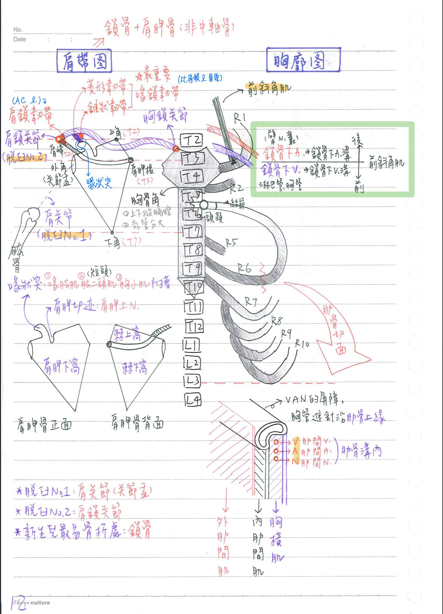

🦴 骨骼系統(胸廓&肩帶)
- ★[110-1]胸廓功能：
- 抵抗呼吸時肺部產生的負壓
- 提供上肢肌肉附著點
- 活動度高，易變形
- 保護內臟
胸骨(sternum)
- 胸骨柄(manubrium)：約位於T3/T4高度；與鎖骨、R1-R2相關節
- ★[108-1；難]主動脈弓位於胸骨炳正中間之後方
- 胸骨角(sternal angle)：胸骨體&胸骨柄交界，約位於T4(下緣)；與R2相關節
—>上/下縱膈腔交界、主動脈弓/升主動脈分界、氣管/支氣管分界
- 胸骨體(body)：約位於T5-T9高度；與R2-R7相關節。
- ★劍突(xiphoid process)：約位於T9-T10高度(不是剛好T10)；與R7相關節
- ★劍胸關節(xiphisternal joint)：T9(成人站立時：T8-T9)
- 外型因人而異(尖、鈍、分支)
- 在體表投射點：心臟下緣、肝臟上界
胸椎(T1-T12)
肋骨：12對
- 肋骨構造(由後往前)：肋硬骨(bony rib)[頭(head)+頸(neck)+結節(tubercle)+角(angle)+體(body)]、肋軟骨(costal cartilage)
胸廓：含胸骨(1)、胸椎(12)、肋骨(12x2)
- 真肋(true rib)：R1-R7，前端接胸骨(R1-R2接胸骨柄、R2-R7接胸骨體)
- 假肋(false rib)：R8-R12，前端不接胸骨
※R8-R10：前端接上一根肋骨
※R11-R12：前端游離—>浮肋(floating ribs) <cf.>R11,R12沒有和肋骨結節-橫突的關節面
- 典型(typical)肋骨：R3-R9
- 非典型(atypical)肋骨：R1,R2,R10-R12
- 典型肋骨的肋骨頭與兩個胸椎椎體相關節；非典型肋骨的肋骨頭只和一個胸椎椎體相關節
(例外：R2是非典型肋骨，但其肋骨頭和兩個胸椎椎體相關節)—>這邊趙俊彥有講錯
- 肋骨緣(costal origin)=肋骨弓(costal arch)：R7-R10的內側緣形成
- 肋骨下緣(subcostal)：R10下緣(約L3高度)
- 肋骨溝(costal groove)：位於肋骨下緣，(由上而下)依序為：
肋間靜脈(V)→肋間動脈(A)→肋間神經(N) (tip：V.A.N.)
- [重點]R1上緣：前斜角肌結節(anterior)
前方：鎖骨下靜脈溝 ⇒ 鎖骨下V
後方：鎖骨下動脈溝 ⇒ 鎖骨下A

肩帶：鎖骨+肩胛骨
鎖骨(clavicle)：呈S形
- 和胸骨柄相接—>★胸鎖關節(sternoclavicular joint)：連接上肢(附屬骨)&軀幹(中軸骨)
- 和肩峰(acromion)相接—>肩鎖關節(acromioclavicular joint)：全身關節脫臼率NO.2
- 肩鎖關節的固定韌帶：3條(趙俊彥少講一條)
(1) 喙鎖韌帶(coracoclavicular l.)=椎狀韌帶(conoid,內側)+菱形韌帶(trapezoid,外側)，固定肩鎖關節最重要的韌帶
(2)肩鎖韌帶(acromioclavicular l. = AC l.)：肩峰-鎖骨
(3)喙肩韌帶(coraco-acromial)：★喙狀突-肩峰(連接相同骨頭)
- 為陰道生產時，新生兒最易骨折處
肩胛骨(scapula)：位於R2-R7(T2-T7)之高度
- 三角：上角(T2)、★★下角(T7)、★內角(T3)
※關節盂(glenoid cavity)：由外角形成，與肱骨頭形成肩關節(全身關節脫臼率NO.1)
- 三緣：上緣、內緣、外緣
- 三窩(fossa)：
- 腹側：肩胛下窩(subscapular fossa)
- 背側：肩胛棘(scapular spine)
- 棘上窩(supraspinous fossa)
- 棘下窩(infraspinous fossa)
- 肩峰(T2)：肩胛棘之外上端形成
- 肩胛根(T3)：肩胛棘內側緣
- ★喙狀突(coracoid process)：位於外角前方，為喙肱肌、肱二頭肌(短頭)、胸小肌附著處
- ★肩胛切跡(scapular notch)：位於上緣，有肩胛上N通過

📖 書本補充：與筆記不同或筆記沒寫到的地方
⚠️
以下為對照書本後整理，筆記原文未更動。標「筆記 vs 書」的是兩邊寫法不同、建議回頭確認的地方。
肋骨及胸壁的關節面（p.142–143）
- 肋軟骨接胸骨的位置：R1 → 胸骨柄；R2 → 胸骨角；R3–R7 → 胸骨體；R8–R10 → 接到第 7 肋軟骨；R11–R12 → 沒有肋軟骨相接（浮肋）。
- 筆記 vs 書：筆記寫「R1–R2 接胸骨柄、R2–R7 接胸骨體」；書上把 R2 寫成接在胸骨角（柄與體的交界），R3–R7 才接胸骨體。兩種說法其實是同一件事（R2 跨在交界處），但考題問「胸骨角連接第幾肋」時答 R2。
- 肋骨接椎體的位置：
- R1 → 第 1 胸椎（單一）。
- R2 → T1 下面的半關節面（demifacet）＋ T2 上面的半關節面；依此類推到 R9（T8 下＋T9 上）。
- R10 → T10 的完整關節面；R11–R12 → T11–T12 的完整關節面。
- 肋骨接橫突：R1–R10 接同號胸椎的橫突；R11–R12 沒有與橫突相接。
- 書的提示：
- 真肋＝肋軟骨直接連到胸骨；假肋＝肋軟骨接到第 7 肋軟骨或完全沒有肋軟骨（浮肋）。
- 通過胸骨角的平面往後通過氣管分叉（carina）以及 T4 和 T5 間的椎間盤。
- 筆記 vs 書：肋骨緣（costal margin）。筆記寫「R7–R10 的內側緣形成」；書的提示寫第 7–11 肋軟骨形成肋骨緣，但同一節考題 106-2-6 的答案是 7～10。Claude 註：書本內文與考題答案不一致；作答時以考題答案 7～10 為準。
- 記憶法：肋溝由上而下＝V-A-N（肋間靜脈、動脈、神經），筆記已有。
- 112-1-17 解析：假肋＝R8–R12，沒有透過自己的肋軟骨直接連到胸骨；但假肋（R8–R10）仍有肋橫突關節。
- 111-2-17 解析：胸骨角是第二肋骨的連接處；劍突與胸骨體之間是軟骨性關節，不是滑液關節。
肩帶（p.326）
- 鎖骨：肩峰端 → 肩鎖關節；胸骨端 → 胸鎖關節。
- 肩胛棘把肩胛骨背面分成棘上窩（棘上肌附著）和棘下窩（棘下肌附著）；肩胛下窩為肩胛下肌附著處。
- 肩峰由棘往外延伸而成，與鎖骨的肩峰端形成關節。
- 肩胛上切跡（筆記稱肩胛切跡）：上方有肩胛上橫韌帶橫越；肩胛上血管走在韌帶上方、肩胛上神經走在韌帶下方（筆記只寫肩胛上N通過）。
- 盂上結節＝肱二頭肌長頭附著處；盂下結節＝肱三頭肌長頭附著處（筆記沒寫）。
- 喙突：肱二頭肌短頭、喙肱肌及胸小肌的附著處（同筆記）。
- 書的提示：肩鎖和胸鎖關節內皆有關節盤（纖維軟骨）。
📝 書中歷屆考題（點選答案作答）
106-2-6p.143
正常成年人之肋骨緣 (costal margin) 是由下列第幾根肋骨 (rib) 所構成？
110-1-24p.143
有關胸廓 (thoracic cage) 之敘述，下列何者錯誤？
💡 呼吸時胸腔體積會增加或減少，所以胸廓會變形。
111-2-17p.144
有關胸骨角 (sternal angle) 之敘述，下列何者正確？
💡 胸骨角接第二肋骨，位在胸骨柄與胸骨體交界；選項 D 描述的是劍突，且劍突與胸骨體之間是軟骨性關節。
112-1-17p.144
有關假肋骨 (false ribs) 之敘述，下列何者正確？
💡 假肋是第 8–12 對肋骨，沒有透過自己的肋軟骨連到胸骨。
112-2-17p.144
肋溝 (costal groove) 內的肋間血管、神經，由上到下之順序為：